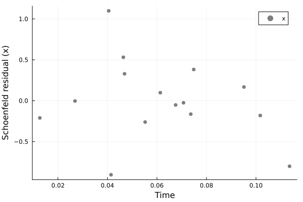
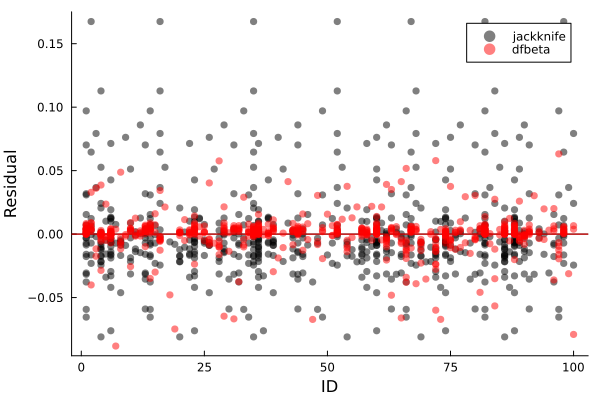
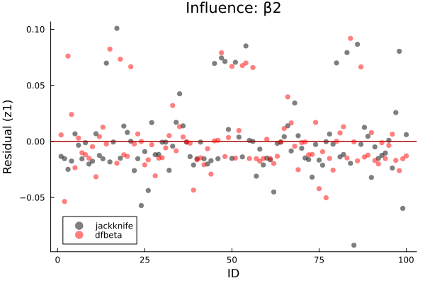
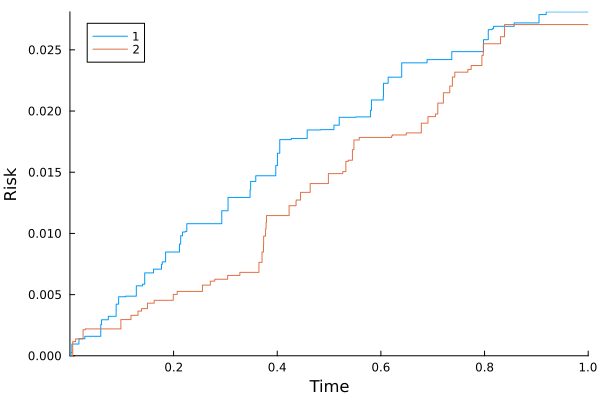
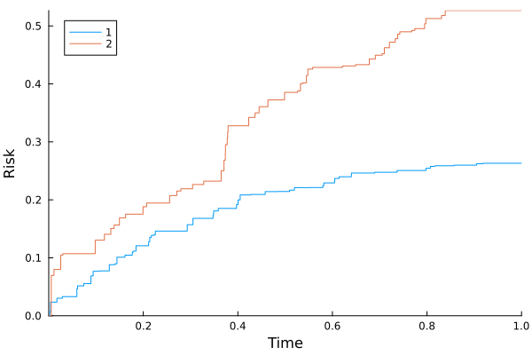

Cox models
cd("docs/src/fig/")
using Random, LSurvival, Distributions, LinearAlgebra, Plots, DataFrames
# generate some data under a discrete hazards model
id, int, out, data = LSurvival.dgm(MersenneTwister(1212), 100, 20)
data[:, 1] = round.(data[:, 1], digits = 3)
d, X = data[:, 4], data[:, 1:3]
wt = ones(length(d)) # weights of 1.0 just to demonstrate usage
# Fit a Cox model with `Tables.jl` and `StatsAPI.@formula` interface (similar to GLM.jl)
# data can be in the form of a named tuple or a DataFrame
tab = (id=id, in = int, out = out, d=d, x=X[:,1], z1=X[:,2], z2=X[:,3], wt=wt)
df = DataFrame(tab)
show(df)Output: Note here that covariates are not time-varying, but that person-period data structures are used (which could accomdate time-varying exposures).
634×7 DataFrame
Row │ id x z t enter d wt
│ Int64 Float64 Float64 Int64 Int64 Float64 Float64
─────┼─────────────────────────────────────────────────────────
1 │ 1 0.125 0.0 1 0 0.0 1.0
2 │ 1 0.125 0.0 2 1 0.0 1.0
3 │ 1 0.125 0.0 3 2 0.0 1.0
4 │ 1 0.125 0.0 4 3 0.0 1.0
⋮ │ ⋮ ⋮ ⋮ ⋮ ⋮ ⋮ ⋮
631 │ 99 0.41 0.0 1 0 1.0 1.0
632 │ 100 0.103 0.0 1 0 0.0 1.0
633 │ 100 0.103 0.0 2 1 0.0 1.0
634 │ 100 0.103 0.0 3 2 1.0 1.0Note use of the id argument to specify that multiple observations come from the same individual. This is important in the case of robust-variance estimation, jackknifing, bootstrapping, and influence-based residuals like dfbeta residuals. It will have no impact on the default output (confirm by fitting this model with and without the statement, and also compare influence plots below)!
mfit = coxph(@formula(Surv(in, out, d)~x+z1+z2), df, ties = "efron", wts = wt, id = ID.(df.id))Output:
Maximum partial likelihood estimates (alpha=0.05):
─────────────────────────────────────────────────────────
ln(HR) StdErr LCI UCI Z P(>|Z|)
─────────────────────────────────────────────────────────
x 1.6289 0.385794 0.872755 2.38504 4.22 <1e-04
z1 0.16381 0.30964 -0.443074 0.770694 0.53 0.5968
z2 1.79485 0.238453 1.32749 2.26221 7.53 <1e-13
─────────────────────────────────────────────────────────
Partial log-likelihood (null): -353.135
Partial log-likelihood (fitted): -322.353
LRT p-value (X^2=61.56, df=3): 2.7234e-13
Newton-Raphson iterations: 6Plotting survival outcomes (person-period plot)
plot(mfit.R)
savefig("ppplot.svg")
Estimating baseline hazards
Baseline hazards (at referent levels of covariates) are estimated by default in coxph.
res = mfit.bh
basehazplot(mfit)
savefig("basehaz.svg")
Output: baseline hazard data with columns:
- increment of cumulative hazard
- risk set
- number of events
- time
- weighted risk set
- weighted number of events
15×6 Matrix{Float64}:
0.0414475 100.0 14.0 1.0 100.0 14.0
0.0675423 86.0 19.0 2.0 86.0 19.0
0.0268964 67.0 6.0 3.0 67.0 6.0
0.046904 61.0 9.0 4.0 61.0 9.0
0.0613442 52.0 8.0 5.0 52.0 8.0
0.0405113 44.0 5.0 6.0 44.0 5.0
⋮ ⋮
0.0464299 19.0 2.0 10.0 19.0 2.0
0.0707131 17.0 2.0 11.0 17.0 2.0
0.0748497 15.0 3.0 12.0 15.0 3.0
0.0552285 12.0 1.0 13.0 12.0 1.0
0.0951294 11.0 2.0 16.0 11.0 2.0
0.0736525 9.0 1.0 20.0 9.0 1.0Model fit: Schoenfeld residuals (one set for each parameter)
res = residuals(mfit, type="schoenfeld")
coxdx(mfit, par=1)
savefig("schoenfeld.svg")
Output: Schoenfeld residuals
15×3 Matrix{Float64}:
-0.90543 2.78278 0.853172
-0.0520158 -0.938642 -1.24122
-0.00391489 -0.116822 0.137734
0.328817 1.78523 -0.87552
0.098118 0.111366 0.85557
1.09806 -0.744318 -0.34648
⋮
0.530965 0.737817 0.562743
-0.0252867 0.0 0.0
0.381532 -0.226191 -0.517533
-0.26111 -0.138081 0.0
0.167407 0.0 -0.596339
-0.164212 -0.183246 0.0Influence: Jackknife/dfbeta residuals
These will be on the individual level and given for each parameter (n by p matrix)
rdfbeta = residuals(mfit, type="dfbeta") # note these are reported on observation level, but are automatically summed in the plot
rjack = residuals(mfit, type="jackknife")
coxinfluence(mfit, type="jackknife", par=1)
coxinfluence!(mfit, type="dfbeta", color=:red, par=1, title="Influence: β1")
savefig("influence.svg")
coxinfluence(mfit, type="jackknife", par=2)
coxinfluence!(mfit, type="dfbeta", color=:red, par=2, title="Influence: β2")
savefig("influence2.svg") 
Competing event analysis: Cox-model-based estimator of the cumulative risk/survival function
using Random, LSurvival, Distributions, LinearAlgebra
# simulate some data and store in a DataFrame
using DataFrames
z, x, t, d, event, wt = LSurvival.dgm_comprisk(MersenneTwister(122), 1000)
X = hcat(x,z)
enter = t .* rand(MersenneTwister(122), length(d))*0.02 # create some fake entry times
df = DataFrame("x"=>x[:,1],"z"=>z[:,1],"t"=>t,"enter"=>enter,"event"=>event,"wt"=>wt)
show(df)Output: event can be 0 (censored) 1 (event type 1: e.g. death from lung cancer) or 2 (event type 2: e.g. death from causes other than lung cancer)
1000×6 DataFrame
Row │ x z t enter event wt
│ Float64 Float64 Float64 Float64 Float64 Float64
──────┼─────────────────────────────────────────────────────────
1 │ 2.7596 0.475 1.0 0.00190001 0.0 1.2425
2 │ 4.166 0.3008 1.0 0.00120305 0.0 0.5362
3 │ 1.1702 4.1267 1.0 0.0165066 0.0 0.4096
4 │ 2.7756 4.7509 1.0 0.0190037 0.0 0.5082
⋮ │ ⋮ ⋮ ⋮ ⋮ ⋮ ⋮
997 │ 4.3977 4.611 1.0 0.0184439 0.0 0.6857
998 │ 0.3136 1.8464 0.6908 0.00510191 2.0 1.118
999 │ 3.7132 3.7309 1.0 0.0149235 0.0 1.2687
1000 │ 0.9304 3.3816 1.0 0.0135263 0.0 0.4498
992 rows omittedFitting cause-specific Cox models for competing event types
fit1 = coxph(@formula(Surv(enter, t, event==1)~x+z), df, wts=df.wt)
n2idx = findall(event .!= 1)
fit2 = coxph(@formula(Surv(enter, t, event==2)~x+z), df[n2idx,:], wts=df.wt[n2idx])Output: fit, cause 1.
Maximum partial likelihood estimates (alpha=0.05):
────────────────────────────────────────────────────────────
ln(HR) StdErr LCI UCI Z P(>|Z|)
────────────────────────────────────────────────────────────
x -0.656322 0.123715 -0.898799 -0.413844 -5.31 <1e-06
z -0.452442 0.114075 -0.676025 -0.228859 -3.97 <1e-04
────────────────────────────────────────────────────────────
Partial log-likelihood (null): -320.021
Partial log-likelihood (fitted): -294.909
LRT p-value (χ²=50.22, df=2): 1.2414e-11
Newton-Raphson iterations: 4Output: fit, cause 2.
Maximum partial likelihood estimates (alpha=0.05):
────────────────────────────────────────────────────────────
ln(HR) StdErr LCI UCI Z P(>|Z|)
────────────────────────────────────────────────────────────
x -0.603645 0.104002 -0.807484 -0.399805 -5.80 <1e-08
z -0.842941 0.12444 -1.08684 -0.599043 -6.77 <1e-10
────────────────────────────────────────────────────────────
Partial log-likelihood (null): -396.272
Partial log-likelihood (fitted): -349.49
LRT p-value (χ²=93.56, df=2): 0
Newton-Raphson iterations: 5Cox-model estimator: cause-specific risks at given levels of covariates
Risk at referent levels of x and z (can be very extreme if referent levels are unlikely/unobservable). E.g. 20% survival is very low, considering the kaplan-meier overall survival estimate at the end of follow-up is 88%. This illustrates that lower levels of x and z confer exceedingly high risks in this example, but the referent levels of x=0 and z=0 are not actually observed in the data. One could center these variables in the model fit or use the approach below of predicting risk at specific, non-referent values of x and z.
println("extrema: x")
extrema(x)
println("extrema: z")
extrema(z)
kaplan_meier(enter, t, d)
res_cph_ref = risk_from_coxphmodels([fit1,fit2])Output:
extrema: x
(0.0121, 4.997)
extrema: z
(0.0164, 4.9996)
Kaplan-Meier Survival
───────────────────────────────────────
time survival # events at risk
───────────────────────────────────────
1 0.0022 0.993103 1.0 145.0
2 0.0038 0.98865 1.0 223.0
3 0.0054 0.985299 1.0 295.0
4 0.0111 0.983546 1.0 562.0
5 0.0174 0.982419 1.0 873.0
6 0.0254 0.981432 1.0 995.0
7 0.0288 0.980444 1.0 994.0
8 0.0298 0.979457 1.0 993.0
9 0.0595 0.978469 1.0 992.0
10 0.061 0.977482 1.0 991.0
───────────────────────────────────────
...
────────────────────────────────────────
time survival # events at risk
────────────────────────────────────────
97 0.7976 0.890595 1.0 903.0
98 0.798 0.889607 1.0 902.0
99 0.8072 0.88862 1.0 901.0
100 0.815 0.887633 1.0 900.0
101 0.8174 0.886645 1.0 899.0
102 0.8309 0.885658 1.0 898.0
103 0.8386 0.884671 1.0 897.0
104 0.8572 0.883683 1.0 896.0
105 0.9051 0.882696 1.0 895.0
106 0.9189 0.881709 1.0 894.0
────────────────────────────────────────
Number of events: 107
Number of unique event times: 106
Cox-model based survival, risk, baseline cause-specific hazard
───────────────────────────────────────────────────────────────────────────────
time survival event type cause-specific hazard risk (j=1) risk (j=2)
───────────────────────────────────────────────────────────────────────────────
1 0.0022 0.995783 1.0 0.0042255 0.0042255 0.0
2 0.0038 0.984904 1.0 0.0109859 0.015165 0.0
3 0.0054 0.943778 2.0 0.0426529 0.015165 0.042009
4 0.0111 0.936002 2.0 0.00827393 0.015165 0.0498177
5 0.0174 0.929601 1.0 0.00686208 0.021588 0.0498177
6 0.0254 0.904361 2.0 0.0275259 0.021588 0.0754059
7 0.0288 0.901559 1.0 0.0031037 0.0243948 0.0754059
8 0.0298 0.899081 2.0 0.00275215 0.0243948 0.0778871
9 0.0595 0.885436 1.0 0.0152925 0.0381441 0.0778871
10 0.061 0.879962 1.0 0.00620196 0.0436355 0.0778871
───────────────────────────────────────────────────────────────────────────────
...
────────────────────────────────────────────────────────────────────────────────
time survival event type cause-specific hazard risk (j=1) risk (j=2)
────────────────────────────────────────────────────────────────────────────────
97 0.7976 0.254265 2.0 0.036717 0.250715 0.502688
98 0.798 0.250166 1.0 0.0162515 0.254847 0.502688
99 0.8072 0.246759 1.0 0.0137101 0.258277 0.502688
100 0.815 0.246444 1.0 0.00128038 0.258593 0.502688
101 0.8174 0.245657 1.0 0.00319903 0.259381 0.502688
102 0.8309 0.240211 2.0 0.0224161 0.259381 0.508194
103 0.8386 0.231124 2.0 0.0385648 0.259381 0.517458
104 0.8572 0.230041 1.0 0.00469675 0.260467 0.517458
105 0.9051 0.227441 1.0 0.0113674 0.263082 0.517458
106 0.9189 0.226586 1.0 0.00376566 0.263938 0.517458
────────────────────────────────────────────────────────────────────────────────
Number of events (j=1): 52
Number of events (j=2): 54
Number of unique event times: 106You can also estimate risk at average levels of x and z (or any level). Here, the survival (94%) is higher than the marginal survival of 88%, emphasizing that predicted risk at population average levels of covariates (the approach taken with Cox models here) can be different from population average risk across all levels of covariates (Kaplan-Meier).
mnx = sum(x)/length(x)
mnz = sum(z)/length(z)
res_cph = risk_from_coxphmodels([fit1,fit2], coef_vectors=[coef(fit1), coef(fit2)], pred_profile=[mnx, mnz])Output:
Cox-model based survival, risk, baseline cause-specific hazard
────────────────────────────────────────────────────────────────────────────────
time survival event type cause-specific hazard risk (j=1) risk (j=2)
────────────────────────────────────────────────────────────────────────────────
1 0.0022 0.999733 1.0 0.000267233 0.000267233 0.0
2 0.0038 0.999038 1.0 0.000694779 0.000961826 0.0
3 0.0054 0.997883 2.0 0.00115694 0.000961826 0.00115583
4 0.0111 0.997659 2.0 0.000224427 0.000961826 0.00137978
5 0.0174 0.997226 1.0 0.000433978 0.00139479 0.00137978
6 0.0254 0.996482 2.0 0.000746628 0.00139479 0.00212434
7 0.0288 0.996287 1.0 0.000196287 0.00159039 0.00212434
8 0.0298 0.996212 2.0 7.46507e-5 0.00159039 0.00219871
9 0.0595 0.995249 1.0 0.000967146 0.00255387 0.00219871
10 0.061 0.994859 1.0 0.00039223 0.00294423 0.00219871
────────────────────────────────────────────────────────────────────────────────
...
────────────────────────────────────────────────────────────────────────────────
time survival event type cause-specific hazard risk (j=1) risk (j=2)
────────────────────────────────────────────────────────────────────────────────
97 0.7976 0.949667 2.0 0.000995932 0.0248543 0.0254966
98 0.798 0.948692 1.0 0.00102779 0.0258303 0.0254966
99 0.8072 0.94787 1.0 0.000867068 0.0266529 0.0254966
100 0.815 0.947793 1.0 8.09749e-5 0.0267297 0.0254966
101 0.8174 0.947601 1.0 0.000202316 0.0269214 0.0254966
102 0.8309 0.947025 2.0 0.000608026 0.0269214 0.0260728
103 0.8386 0.946035 2.0 0.00104605 0.0269214 0.0270634
104 0.8572 0.945754 1.0 0.000297036 0.0272024 0.0270634
105 0.9051 0.945074 1.0 0.00071891 0.0278824 0.0270634
106 0.9189 0.944849 1.0 0.000238151 0.0281074 0.0270634
────────────────────────────────────────────────────────────────────────────────
Number of events (j=1): 52
Number of events (j=2): 54
Number of unique event times: 106plot(res_cph)
savefig("risk-multicox.svg")
Here is another way to get risk at the reference level of x and z, more explicitly:
res_cph_ref = risk_from_coxphmodels([fit1,fit2], coef_vectors=[coef(fit1), coef(fit2)], pred_profile=[0.0, 0.0])plot(res_cph_ref)
savefig("risk-multicox2.svg")
The default is the Cheng-Fine-Wei approach[cfw], which uses the cumulative hazard to estimate survival via $S(t) = exp(-\Lambda(t))$. An alternative uses an Aalen-Johansen analogue to estimate cumulative risks. These can occasionally result in risks outside of logical bounds. Here, you can see there is a negligible difference in the risk estimates between these two approaches (contrasted with the res_cph_ref object).
res_cph_ref_aalen = risk_from_coxphmodels([fit1,fit2], coef_vectors=[coef(fit1), coef(fit2)], pred_profile=[0.0, 0.0], method="aalen-johansen")
# default is cheng-fine-wei method
res_cph_ref_cheng = risk_from_coxphmodels([fit1,fit2], coef_vectors=[coef(fit1), coef(fit2)], pred_profile=[0.0, 0.0], method="cheng-fine-wei")
show(res_cph_ref_aalen, maxrows=4)
show(res_cph_ref_cheng, maxrows=4)Output:
# Aalen-Johansen method
Cox-model based survival, risk, baseline cause-specific hazard
──────────────────────────────────────────────────────────────────────────────
time survival event type cause-specific hazard risk (j=1) risk (j=2)
──────────────────────────────────────────────────────────────────────────────
1 0.0022 0.995775 1.0 0.0042255 0.0042255 0.0
2 0.0038 0.984835 1.0 0.0109859 0.0151649 0.0
──────────────────────────────────────────────────────────────────────────────
...
────────────────────────────────────────────────────────────────────────────────
time survival event type cause-specific hazard risk (j=1) risk (j=2)
────────────────────────────────────────────────────────────────────────────────
105 0.9051 0.223782 1.0 0.0113674 0.26186 0.514358
106 0.9189 0.222939 1.0 0.00376566 0.262703 0.514358
────────────────────────────────────────────────────────────────────────────────
Number of events (j=1): 52
Number of events (j=2): 54
Number of unique event times: 106
# Cheng, Fine, Wei method
Cox-model based survival, risk, baseline cause-specific hazard
──────────────────────────────────────────────────────────────────────────────
time survival event type cause-specific hazard risk (j=1) risk (j=2)
──────────────────────────────────────────────────────────────────────────────
1 0.0022 0.995783 1.0 0.0042255 0.0042255 0.0
2 0.0038 0.984904 1.0 0.0109859 0.015165 0.0
──────────────────────────────────────────────────────────────────────────────
...
────────────────────────────────────────────────────────────────────────────────
time survival event type cause-specific hazard risk (j=1) risk (j=2)
────────────────────────────────────────────────────────────────────────────────
105 0.9051 0.227441 1.0 0.0113674 0.263082 0.517458
106 0.9189 0.226586 1.0 0.00376566 0.263938 0.517458
────────────────────────────────────────────────────────────────────────────────
Number of events (j=1): 52
Number of events (j=2): 54
Number of unique event times: 106Cox-model estimator: standard errors and confidence intervals
Robust, jackknife (leave-on-out), and bootstrap standard errors are easily calculated from cox model fits (though they may be computationally demanding to calculate). For person-period data, each of these requires the id argument to be specified.
coxfit = coxph(@formula(Surv(in, out, d)~x+z1+z2), tab, id=ID.(tab.id))
show(coxfit)
asym = stderror(coxfit) # asymptotic approach based on information matrix
rob = stderror(coxfit, type="robust") # jackknife approach
jack = stderror(coxfit, type="jackknife") # jackknife approach
boot = stderror(coxfit, type="bootstrap", iter=200, seed=MersenneTwister(12322)) # bootstrapping approach
DataFrame("asym" => asym, "rob" => rob,"jack" => jack, "boot" => boot)Output:
We can see in this dataset all standard error estimates are fairly similar
3×4 DataFrame
Row │ asym rob jack boot
│ Float64 Float64 Float64 Float64
─────┼────────────────────────────────────────
1 │ 0.385794 0.34421 0.37397 0.365392
2 │ 0.30964 0.307867 0.326048 0.331512
3 │ 0.238453 0.238146 0.260687 0.240776These methods are also available for vcov and confint, where confint uses variance estimates to create Wald-type confidence intervals (i.e. not bootstrap percentile confidence intervals)
asym = confint(coxfit) # asymptotic approach based on information matrix
rob = confint(coxfit, type="robust") # jackknife approach
jack = confint(coxfit, type="jackknife") # jackknife approach
boot = confint(coxfit, type="bootstrap", iter=200, seed=MersenneTwister(12322)) # bootstrapping approach
DataFrame("asym" => asym[:,1], "rob" => rob[:,1],"jack" => jack[:,1], "boot" => boot[:,1])Output:
Here are the lower 95% confidence bounds for each method:
3×4 DataFrame
Row │ asym rob jack boot
│ Float64 Float64 Float64 Float64
─────┼────────────────────────────────────────────
1 │ 0.872755 0.954257 0.895928 0.912742
2 │ -0.443074 -0.439597 -0.475232 -0.485941
3 │ 1.32749 1.32809 1.28391 1.32294- cfwCheng SC, Fine JP, Wei LJ. Prediction of Cumulative Incidence Function under the Proportional Hazards Model. Biometrics. 1998;54:219–228.